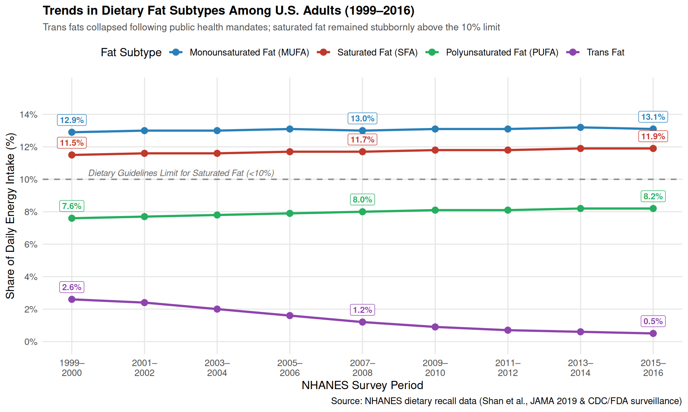

Fats
Dietary Fat Subtypes in the U.S. Diet (1999–2023)
Dietary fats are classified chemically by the number of double bonds in their fatty acid chains:
- Saturated Fatty Acids (SFAs): No double bonds. Found primarily in animal products (beef, pork, dairy, butter) and tropical oils (palm, coconut). Healthy Guideline: Limit to <10% of total daily calories (<6% for cardiovascular risk reduction).
- Monounsaturated Fatty Acids (MUFAs): One double bond. Found in olive oil, avocados, canola oil, and many nuts. Healthy Guideline: Target 15% to 20% of daily calories (≥15%), representing the primary source of dietary fat.
- Polyunsaturated Fatty Acids (PUFAs): Two or more double bonds, including essential omega-3 and omega-6 fatty acids. Found in plant and seed oils (soybean, sunflower, corn), walnuts, flaxseed, and fatty fish. Healthy Guideline: Target 5% to 10% of daily calories (~8%–10%).
- Trans Fatty Acids (Trans Fats): Created industrially by partially hydrogenating liquid vegetable oils to make them solid at room temperature. Healthy Guideline: Limit to <1% of daily calories (as close to 0% as possible).
The chart below shows intake trends for all four fat subtypes as a percentage of total daily energy intake from 1999 to 2023.
Saturated fats remain solid at room temperature and have historically been targeted by nutritional guidance due to their impact on blood lipids.
- Primary Sources: Fatty cuts of beef and pork, cheese, whole milk, butter, ice cream, cured meats (sausage, bacon), and palm/coconut oil.
- Healthy Guideline: Limit to <10% of total daily calories (<6% for individuals with elevated cardiovascular risk).
- Benefits When Consumed Properly: Supplies stable fatty acids for cell membrane structure, supports steroid hormone production, and assists the absorption of fat-soluble vitamins (A, D, E, K).
- Unhealthy Effects of Overconsumption: Directly increases low-density lipoprotein (LDL) cholesterol particles, accelerating arterial plaque accumulation (atherosclerosis) and raising the risk of heart disease and stroke.
Monounsaturated fats are typically liquid at room temperature and semi-solid when refrigerated. They are widely regarded as a cornerstone of heart-healthy diets.
- Primary Sources: Extra virgin olive oil, canola oil, avocados, almonds, peanuts, cashews, and peanut butter.
- Healthy Guideline: Target 15% to 20% of daily calories (≥15%), serving as the primary source of dietary fat.
- Benefits When Consumed Properly: Helps reduce harmful LDL cholesterol while preserving protective HDL cholesterol, enhances insulin sensitivity, and provides antioxidants like vitamin E that dampen vascular inflammation.
- Unhealthy Effects of Overconsumption: Because all fats supply 9 calories per gram, consuming MUFAs far beyond caloric needs causes unintended weight gain and associated metabolic strain.
Polyunsaturated fats contain two or more double bonds and include essential fatty acids that the body cannot synthesize on its own.
- Primary Sources: Fatty fish (salmon, mackerel, sardines), walnuts, flaxseed, chia seeds, and vegetable oils (soybean, sunflower, corn).
- Healthy Guideline: Target 5% to 10% of daily calories (with a balanced ratio between omega-3 and omega-6 fatty acids).
- Benefits When Consumed Properly: Delivers essential omega-3 and omega-6 fatty acids critical for brain development, cell membrane flexibility, blood clotting control, and lower cardiovascular mortality when replacing saturated fat.
- Unhealthy Effects of Overconsumption: An excessive intake—especially of refined omega-6 seed oils out of proportion to omega-3s—can promote oxidative stress and systemic inflammatory signaling, alongside excess calorie intake.
Industrial trans fats are manufactured by bubbling hydrogen gas through liquid vegetable oil to produce a cheap, shelf-stable solid fat.
- Historical Sources: Commercial margarine, vegetable shortening, deep-fried fast food, microwave popcorn, and commercial frostings/pastries.
- Healthy Guideline: Limit to <1% of daily calories (as close to 0% as practically possible).
- Benefits When Consumed Properly: Industrial trans fats offer no physiological or nutritional benefit at any intake level.
- Unhealthy Effects of Overconsumption: Highly toxic to the cardiovascular system; even small amounts simultaneously elevate LDL (“bad”) cholesterol, depress HDL (“good”) cholesterol, provoke endothelial inflammation, and sharply increase heart attack risk.
Key Takeaways
- A Major Public Health Victory: The near-elimination of industrial trans fat (<1% limit achieved) demonstrates the efficacy of federal food policy.
- Persistent Saturated Fat Surplus: Saturated fat continues to exceed the healthy limit of 10%, averaging ~11.8% of daily energy intake.
- Room for MUFA Growth: Health-promoting monounsaturated fats remain at ~13%, below the optimal target of ≥15%.
- PUFAs Within Target: Polyunsaturated fats have expanded to 8.4%, remaining within the recommended 5%–10% AMDR window.
Understanding Blood Lipids: LDL vs. HDL
Because cholesterol is a fat-based molecule, it cannot dissolve in water-based bloodstream fluids on its own. To circulate, it must be packaged into spherical transport capsules made of lipids and proteins called lipoproteins.
LDL: Low-Density Lipoprotein (“Bad” Cholesterol)
- Biological Function: LDL functions as a delivery vehicle, transporting cholesterol from the liver outward to peripheral cells throughout the body for membrane repair and steroid hormone production.
- Why It Is Considered “Bad”: When LDL concentrations become excessively high, surplus particles linger in circulation and penetrate the endothelium (inner lining) of arteries. There, they oxidize, prompting immune cells to engulf them and transform into fatty foam cells. Over decades, this process forms hardened atherosclerotic plaques, narrowing arteries and dramatically raising the risk of heart attacks and strokes.
HDL: High-Density Lipoprotein (“Good” Cholesterol)
- Biological Function: HDL acts as the body’s cardiovascular maintenance crew through a mechanism known as reverse cholesterol transport. It scavenges surplus cholesterol from tissues and vessel walls and escorts it back to the liver for recycling or excretion through bile.
- Why It Is Considered “Good”: Higher circulating HDL levels help keep arterial pathways clear of lipid deposits, provide anti-inflammatory and antioxidant defenses to blood vessel walls, and protect against cardiovascular events.
Key Differences at a Glance
| Metric | LDL (Low-Density Lipoprotein) | HDL (High-Density Lipoprotein) |
|---|---|---|
| Common Name | “Bad” cholesterol | “Good” cholesterol |
| Composition | High lipid content (~50% cholesterol, ~25% protein) | High protein content (~50% protein, ~20% cholesterol) |
| Direction of Flow | Liver \(\rightarrow\) Peripheral tissues and arterial walls | Blood vessels and tissues \(\rightarrow\) Liver (clearing excess) |
| Vascular Effect | Promotes arterial inflammation and plaque buildup | Clears excess cholesterol and protects vessel lining |
| Dietary Fat Impact | Increased by saturated and trans fats | Preserved/boosted by MUFAs; suppressed by trans fats |